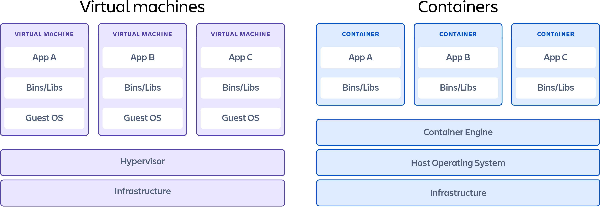

Docker
Docker 소개
-
SW 가상화
- 서버 환경까지 소프트웨어화를 할 수 없을까에 대한 고민
- 관리해야 하는 환경이 늘어날 수록 고민은 커짐
- 특정 SW 환경을 만들고 Local, Production Server에서 그대로 활용
- 서버 환경까지 소프트웨어화를 할 수 없을까에 대한 고민
-
VM
- OS를 포함한 가상화 SW → OS 위에 OS… 많은 리소스 사용
-
Container
- OS가 아닌 그 위에 SW 환경만 가상화, VM보다 훨신 가볍다
- Container 기술을 쉽게 사용할 수 있도록 나온 도구가 바로 Docker
-
VM vs Contrainers
Containers vs Virtual Machines | Atlassian
Which option is better for you?
https://www.atlassian.com/microservices/cloud-computing/containers-vs-vms
-
Docker Image(Read-only)
- 컨테이너 생성에 사용하는 템플릿
-
Docker Container
- Docker Image를 사용해 생성한 인스턴스
-
다른 사람이 만든 SW를 바로 가져와서 사용할 수 있음
- ex: MySQL, Jupyter Notebook
Docker Image 저장 & 배포
- Docker Image 저장소
- Docker Hub
- GCR
- ECR
- Docker Image 배포
- 이미지를 서버에 배포하는 가장 간단한 방법 : Cloud 서비스 활용
- GCP : Cloud Run
- GCR에 올린 url을 넘겨주면 간단히 생성 가능
- AWS : ECS
- GCP Compute Engine에 Docker 이미지 배포하기 & Github action 연동
- Compute Engine 인스턴스 실행 시 Docker Image를 가지고 실행하도록 설정 가능
- Github Action을 사용해 Docker Image Push 자동화 가능
- IAM(Identity Access Management) 설정 필요
- 클라우스 서비스 접근 권한을 관리하는 서비스
- 서비스 계정 생성
- 서비스 계정→키 생성 가능(노출주의)
- 내 project의 github repos 접속
- Secret에 GCP Project ID추가(GCP 대시보드 참조)
- Secret에 GCP Instance 이름 추가
- Secret에 GCP Instance의 Zone 추가
- GCP 접속, Compute Engine 생성
- 이름과 Zone은 secret과 일치시켜 입력
- Deploy Container 클릭
- GCR에 Push한 Container Image 선택
- 네트워크 태그 추가 : streamlit
- 외부 ip로 접속 시, streamlit page를 볼 수 있음
- github action으로 이미지 배포 자동화
-
deploy_docker.yml
name: Build and Deploy to Google Compute Engine on: push: branches: [ main ] paths: - 'part2/04-cicd/**' env: PROJECT_ID: ${{ secrets.GCP_PROJECT_ID }} DOCKER_IMAGE_NAME: streamlit GCE_INSTANCE: ${{ secrets.GCE_INSTANCE }} GCE_INSTANCE_ZONE: ${{ secrets.GCE_INSTANCE_ZONE }} jobs: setup-build-publish-deploy: name: Setup, Build, Publish, and Deploy runs-on: ubuntu-latest steps: - name: Checkout uses: actions/checkout@v2 # gcloud CLI 설정 - uses: google-github-actions/setup-gcloud@master with: version: '290.0.1' service_account_key: ${{ secrets.SERVICE_ACCOUNT_KEY }} project_id: ${{ secrets.GCP_PROJECT_ID }} # gcloud에서 Docker 사용할 수 있도록 설정 - run: |- gcloud --quiet auth configure-docker # Model 파일 복사 - name: Copy model file run: | cd part2/04-cicd sh copy_asset.sh # Docker Image Build - name: Build run: |- docker build part2/04-cicd --tag "gcr.io/$PROJECT_ID/$DOCKER_IMAGE_NAME:$GITHUB_SHA" # Docker Image Push - name: Publish run: |- docker push "gcr.io/$PROJECT_ID/$DOCKER_IMAGE_NAME:$GITHUB_SHA" # Deploy : update-container로 업데이트 요청 - name: Deploy run: |- gcloud compute instances update-container "$GCE_INSTANCE" \ --zone "$GCE_INSTANCE_ZONE" \ --container-image "gcr.io/$PROJECT_ID/$DOCKER_IMAGE_NAME:$GITHUB_SHA"
-
Docker Compose
- 여러 Docker Image를 동시에 실행해야 한다면?
- ex: DB Container + Web Service 동시 실행
- docker compose를 사용해 여러 컨테이너를 동시에 실행할 수 있음
- 실행하는 컨테이너들의 실행 순서, 의존도를 관리할 수 있음
- docker-compose.yml 파일에 작성
Logging
Logging Basics
- 데이터의 종류
- DB Data : DB에 저장
- 서비스 로그
- 서비스 운영을 위해 필요한 데이터
- 고객 가입일, 물건 구매 기록 등
- 사용자 행동 Data: 주로 Object Storage, Data Warehouse에 저장
- 유저 행동 로그
- 서비스에 반드시 필요한 내용은 아님
- 그러나 더 좋은 제품을 만들기 위해 or 데이터 분석시 필요
- 앱 or 웹에서 유저가 어떤 행동을 하는지를 나타내는 데이터
- Click, View, Swipe 등
- 인프라 Data(metric)
- 백엔드 웹 서버가 제대로 동작하고 있는지 확인하는 데이터
- Request 수, Response 수, DB 부하 등
- Metric
- 값을 측정할 때 사용
- CPU, Memory 등
- Log
- 운영 관점에서 알아야 하는 데이터를 남길 때 사용
- 함수 호출 기록, 예외처리 기록 등
- Trace
- 개발 관적에서 알아야 하는 것
- Exception Trace
- 데이터 적재 방식
- DB(RDB)
- 실제 서비스용 DB, 비지니스와 연관된 중요 정보
- 고객 정보, 주문 요청
- 행렬로 구성
- My SQL, PostgreSQL 등
- 실제 서비스용 DB, 비지니스와 연관된 중요 정보
- DB(NoSQL, Not Only SQL)
- Elasticsearch, LogStach or Fluent, Kibana에서 활용하는 경우(스키마에 덜 민감)
- 데이터가 많아지며 RDBMS로 트래픽 감당이 어려워서 개발됨
- Key-Value Store, Document, Column Family, Graph 등
- JSON과 유사한 형태, XML 등도 활용 됨
- MongoDB 등
- ObjectStorage
- S3, Cloud Storage에 파일 형태로 저장, 어떤 형태의 파일이라도 저장할 수 있는 저장소
- csv, parquent, json, 이미지, 음성 등
- 별도 DB나 Data Warehouse에 옮기는 작업 필요
- Data Warehouse
- 데이터 분석시 활용, 여러 공간에 저장된 데이터를 한 곳으로 저장(데이터 창고)
- RDBMS와 같은 SQL을 사용하나 성능이 더 좋은 편
- AWS Redshift, GCP BigQuery, Snowflake 등
- RDB, NoSQL,Object Storage 등에 저장된 데이터를 한 곳으로 옮겨서 처리
- DB(RDB)
- DB Data : DB에 저장
Logging in python
-
logging
- 파이썬 기본 모듈
-
log level
Level Value Remark DEBUG 10 문제 해결에 필요한 자세한 정보를 공유 INFO 20 작업이 정상적으로 작동하고 있는 경우 WARNING 30 예상하지 못한 일이거나 발생 가능한 문제일 경우 ERROR 40 프로그램이 함수를 실행할 수 없는 심각한 상황 CRITICAL 50 프로그램이 동작할 수 없는 심각한 문 -
Python Logging Component
- Loggers
- Log를 생성하는 method 제공(logger.info() 등)
- Handlers
- Logger에서 만들어진 Log를 적절한 위치로 전송(파일 저장 또는 Console 출력 등)
- Filters
- Formatters
- 최종적으로 Log에 출력될 Format 설정
- Loggers
Online Serving Logging(Big Query)
- Big Query
- GCP의 Data Warehouse
- 데이터 분석을 위한 도구로 Apache Spark의 대용으로 활용 가능
- Firebase, Google Analytics4와 연동되어 많은 회사에서 사용 중
- 데이터를 조회할 때 마다 비용 발생
- 파티션 설정으로 모든 데이터가 아닌 일부 데이터만을 조회할 수 있음(비용 절감)
BentoML
Intro
FastAPI로 직접 ML 서버 개발
→ 1~2개의 모델을 만들 때는 직접 개발 가능
그러나 30~50개의 모델을 만들어야 한다면?
많은 모델을 만들다 보니 반복되는 작업이 존재(Config, FastAPI 설정 등)
→ 추상화가 불가능할까?
더 쉬운 개발을 위해 Serving에 특화된 라이브러리를 원하게 됨
→ BentoML
BentoML 소개
- Artifact, Asset 등 사이즈가 큰 파일을 패키징, Cloud Service에 지속적인 배포를 위한 많은 작업 등을 CLI 명령어로 진행할 수 있게 하여 문제의 복잡도를 낮춤
- Python Logging Module로 Access Log, Prediction Log를 기본적으로 기록, Config로 Logging도 수정할 수 있으며 Prometheus 같은 Metric 수집 서버에 전송할 수 있음
- Adaptive Micro Batching 방식을 사용하여 동시에 많은 요처이 들어와도 높은 처리량을 보여줌
BentoML 특징
- 쉬운 사용성
- Online & Ofline Serving 지원
- Tensorflow, PyTorch, Keras, XGBoost 등 Major 프레임워크 지원
- Docker, Kubernetes, AWS, Azure 등의 비포 환경 지원 및 가이드 제공
- Flask 서버 대비 100배 처리량
- 모델 저장소(yatai) 웹 대시보드 제공
- 데이터 사이언스와 DevOps 사이의 간격을 이어주며 높은 성능의 Serving이 가능
BentoML 설치
- Python 3.6 이상 지원
pip install bentomlBentoML 사용 Flow
- 모델 학습 코드 생성
- Prediction Service Class 생성
- Prediction Service 모델 저장(pack)
- (Local)Serving
- Docker Image Build(컨테이너화)
- Serving 배포
BentoML Artifact Metadata 접근 방법
-
by CLI
bentoml get model:version -
by REST API
serverip:serverport/metadata -
by Python
from bentoml import load svc = load('path_to_bento_service') print(svc.artifacts['model'].metadata)
BentoML API Functions, Adapters
- BentoService API : Client가 예측 서비스에 접근하기 위한 end point를 생성
- Adapter : input/output을 추상화해서 중간 부분을 연경하는 layer
- csv 파일 형식으로 예측 요청한 경우 ⇒ DataFrame Input을 사용하고 있으면 내부적으로 pandas의 DataFrame객체로 변환하고 API함수에 전달
from my_lib import preprocessing, postprocessing, fetch_user_profile_fome_db
class ExamplePredictionService(bentoml.BentoService):
@bentoml.api(input=DataframeInput(), batch=True)
def predict(self, df):
user_profile_column = fetch_user_profile_fome_db(df['user_id'])
df['user_profile'] = user_profile_column
model_input = preprocessing(df)
model_output = self.artifacts.model.predict(model_input)
return postprocessing(model_output)Retrieving BentoService
학습모델 저장 후, artifact bundle을 찾을 수 있음
bentoml retrieve ModelServe --target_dir=~/bentoml_bundle/Airflow
버킷플레이스 Airflow 도입기 - 오늘의집 블로그
Kubernetes를 이용한 효율적인 데이터 엔지니어링(Airflow on Kubernetes VS Airflow Kubernetes Executor) - 1
쏘카 데이터 그룹 - Airflow와 함께한 데이터 환경 구축기(feat. Airflow on Kubernetes)
지난 3년간 Airflow 구축 및 운영기록
https://tech.socarcorp.kr/data/2021/06/01/data-engineering-with-airflow.html
Airflow Executors | Astronomer Documentation
An introduction to the Apache Airflow Executors: Celery, Local, and Kubernetes.
https://docs.astronomer.io/learn/airflow-executors-explained
Apach Airflow 소개
- Batch Process : 예약된 시간에 실행되는 프로세스
- 모델을 주기적으로 학습시키는 경우(Continuous Training) 필요
- 모델을 주기적으로 Serving하는 경우 필요
- 기존 대표적인 Batch Process : Linux Crontab
- 아직도 간단하게 사용하기에 좋은 선택임
- 실행중 오류가 발생한 경우, 별도의 처리를 해주지 않음
- 과거 실행 이력 및 로그를 보기 어려움
- 여러 파일 실행이나 복잡한 파이프라인을 만들기 어려움
- Airflow
- 현재 스케줄링, 워크플로우 도구의 표준
- Airbnb에서 개발
- 파이썬으로 스케줄링 및 파이프라인 작성
- 실패 시 알람, 재실행 시도
- 동시 실행 워커 수 지정
- 설정 및 변수 값 분리
Apach Airflow 설치
- Airflow 설치
pip install apache-airflowApach Airflow 사용
- Airflow 기본 디렉토리 설정
export AIRFLOW_HOME=.- Airflow DB 초기화
airflow db init- Airflow 어드민 계정 생성
airflow user create- Airflow 웹서버 실행
airflow webserver- Airflow 스케줄러 실행
airflow schedulerDAG와 Task
- DAG : 1개의 파이프라인
- Variable : Airflow console에서 저장, DAG에서 활용
- Connection & Hook : 연결하기 위한 설정(My SQL, GCP)
- Sensor : 외부 이벤트를 기다리며 특정 조건이 만족하면 실행
- Marker
- XComs : Task끼리 결과를 주고받기를 원하는 경우 사용
- Task : DAG 내에서 실행할 작업
Apach Airflow 아키텍처와 활용방안
- 실제 회사에서의 구축 방법 사례
- Managed Airflow(GCP COmposer, AWS MWAA)
- VM + Docker Compose
- Kubernetes + Helm
- Airflow는 데이터 엔지니어링에서 많이 사용하지만, ML Ops에서도 활용 가능
- 주기적인 실행이 필요한 경우
- Batch Training
- Batch Serving
- Move MySQL to Data Warehous
- Batch ETL for feature store
ML Design Pattern
- ML의 특수성으로 별도의 디자인 패턴이 생김
- Data, Model, Code
- 큰 분류
- Serving 패턴 : 모델을 Production 환경에 서빙하는 패턴
- Training 패턴 : 모델을 학습하는 패턴
- QA 패턴 : 모델의 성능을 Production 환경에서 평가하기 위한 패턴
- Operation 패턴 : 모델을 운영하기 위한 패턴
Serving 패턴
ML Model을 Production 환경에서 어떻게 사용 할 것인가?
-
Web Single 패턴
- FastAPI, Flask 등으로 단일 REST API 생성
-
Synchronuous 패턴
- 동기로 실행
- 예측 결과에 따라 로직이 달라지는 경우
- 예측이 끝날 때 까지 프로세스를 block
- 예측 속도가 병목이 됨
-
Asynchronous 패턴
- 비동기로 실행, 응답을 바로 받을 필요가 없는 경우
- 클라이언트와 서버 사이에 메세지 큐를 추가
- 실시간 예측에는 적절하지 않음
-
Microservice Vertical 패턴
- 여러 모델이 순차적으로 연결되는 경우
- 각각 모델을 별도 서버로 배포, 동기적으로 순서대로 예측
-
Microservice Horizontal 패턴
- 하나의 request에 여러 모델을 병렬로 실행하고 싶은 경우
-
Prediction Cache 패턴
-
Request할 때 데이터를 저장하고 예측 결과도 별도로 저장해야 하는 경우
-
예측 결과가 자주 변경되지 않는 경우
-
주기적 삭제 로직 필요
-
-
Training 패턴
- 학습 파이프라인 구성을 위한 패턴
- Batch Training 패턴
- 주기적으로 학습해야 하는 경우
- 스케줄링 서버 필요
- Pipeline Training 패턴
-
학습 파이프라인 단계를 분리해 각각을 선택하고 재사용할 수 있도록 만드는 경우
-
Batch Training 패턴의 응용
-
각 작업을 개별 리소스로 분할
-
시간이 많이 걸리는 작업은 자주 실행, 다른 작업은 적게 실행
-
이전 작업의 실행 결과가 후속 작업의 input
-
중간중간 결과를 data warehouse에 저장
-
-
QA 패턴
- 예측 서버와 모델의 성능 평가를 위한 패턴
- Shadow AB Test 패턴
- 새로운 예측 모델이 Production 환경에서 잘 동작하는지 확인하고 싶은 경우
- 새로운 예측 서버가 Production 환경의 부하를 잘 견디는지 확인하고 싶은 경우
- request가 들어온 경우 기존 모델과 새로운 모델 모두에게 전달, 기존 모델 서버만 response
- 새로운 예측 서버에 대한 비용 발생
- Online AB Test 패턴
- 새로운 예측 모델이 Production 환경에서 잘 동작하는지 확인하고 싶은 경우
- 새로운 예측 서버가 Production 환경의 부하를 잘 견디는지 확인하고 싶은 경우
- Shadow AB Test 패턴과 비슷한 방식
- Request가 들어오면 지정된 비율(ex 1:1)로 트래픽을 나누어 절반은 기존, 절만은 새로운 모델로 예측(초반엔 9:1이 적당)
- 새로운 예측 서버에 대한 비용 발생
-
Operation 패턴
- Model in image 패턴
- 서비스 환경과 모델을 통합해서 관리하고 싶은 경우
- Docker Image 안에 모델이 저장되어 있는 경우
- 모델 수정이 빈번한 경우, Docker Image Build를 계속 수행해야 함
- Model Load 패턴
- Docker Image와 모델 파일을 분리하고 싶은 경우
- 모델 업데이트가 빈번한 경우
- 동일 서버 이미지, 다수 모델을 사용하는 경우
- 모델파일은 Object Storage에 업로드하고 프로세스를 시작할 때 모델을 다운
- 서비스 시작이 오래걸릴 수 있음, 서버 이미지와 모델관리 필요
- Model in image 패턴
-
Prediction Log 패턴
- 서비스 개선을 위해 예측, 지연시간 로그를 사용하려고 할 경우
- 프로세스에서 로그를 저장하지 않고, 메세지 시스템으로 넘겨서 프로세스가 저장에 신경쓰는 시간을 줄임
- 로그가 많아지면 저장 비용이 발생
-
Condition Based Serving 패턴
- 상황에 따라 예측해야 하는 대상이 다양한 경우(ex 국가에 따른 언어모델)
- 룰베이스 방식으로 상황에 따라 모델을 선택해야 하는 경우
- 모델 수에 따라 운영 비용 증가